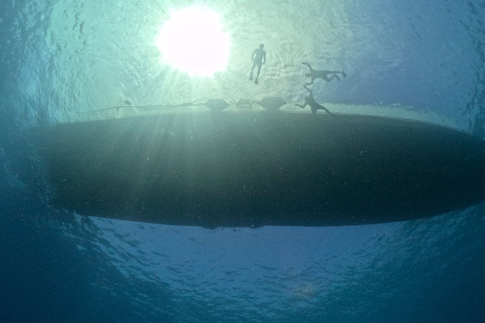
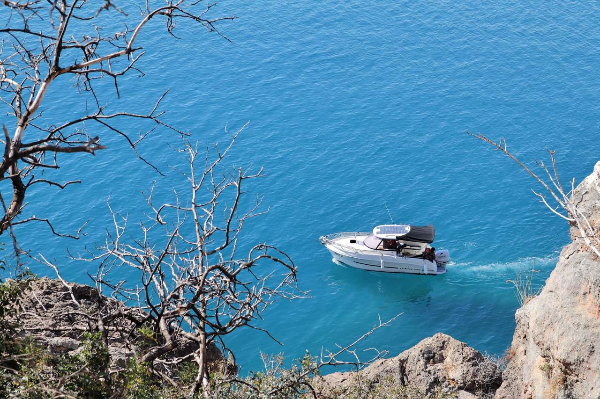
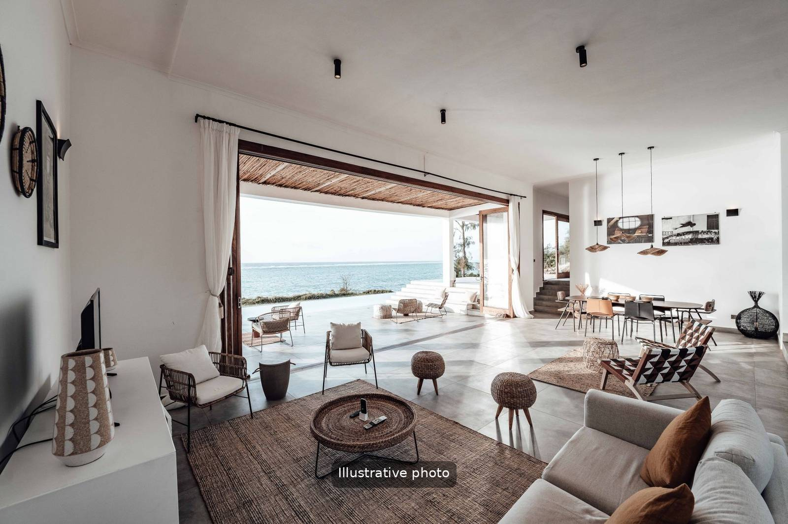
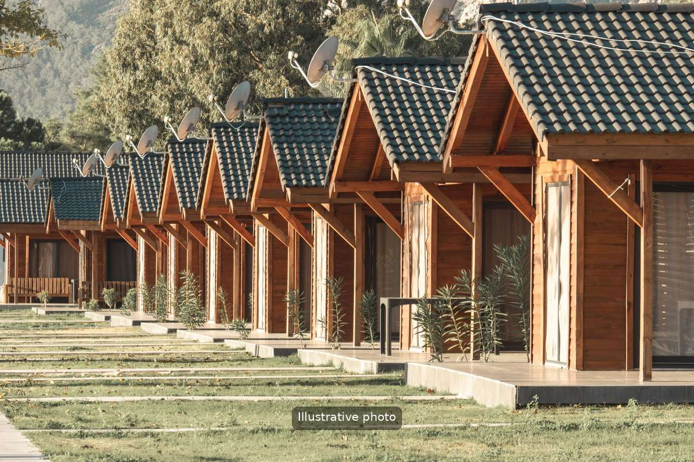
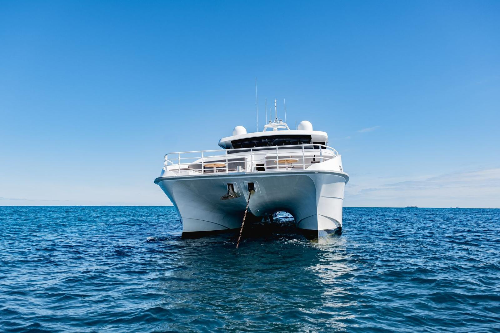
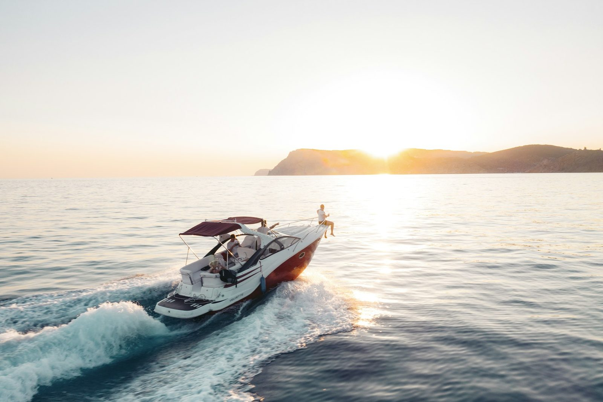
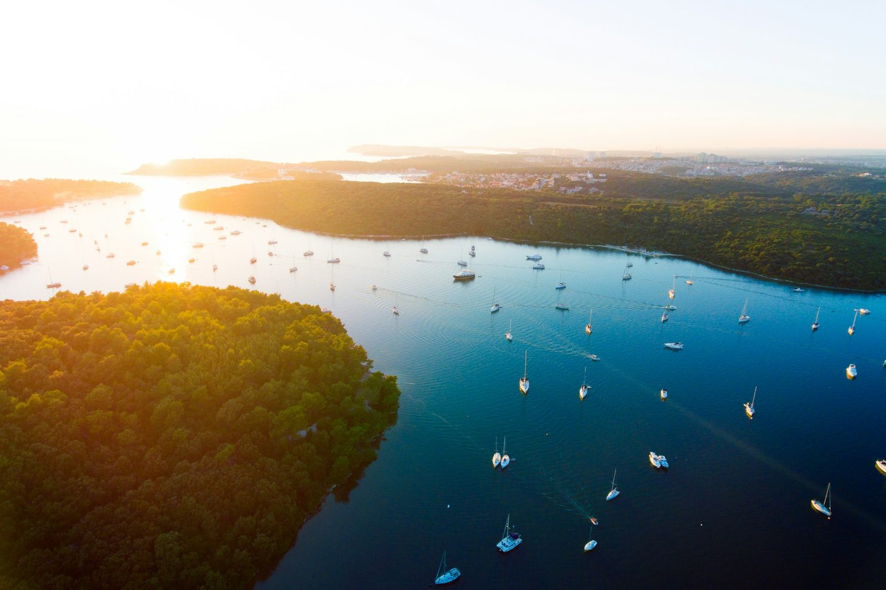

50 € po odrasloj osobi
Pula · Istra · Hrvatska
Istru upoznajte s mora
Zaplovite oko Brijuna, okupajte se kod otoka Svetog Jerolima ili uživajte u večernjem svjetlu uz dupine. Obrok i neograničeno piće uključeni su u svaki izlet, već od 50 € po odrasloj osobi.
Odgovaramo unutar 24 sata
- Polazak s Rive u Puli
- Obrok i neograničeno piće na brodu
- Djeca do 3 godine putuju besplatno
- Kućni ljubimci su dobrodošli
Niste sigurni koji izlet odabrati?
Krenite od toga kakav dan želite.
Naši izleti iz Pule
Cijene su po osobi. Svaki izlet polazi s Rive.
 50 € po odrasloj osobi
50 € po odrasloj osobiZalazak sunca & dupini
Pogledajte detalje: Zalazak sunca & dupini 50 € po osobi
50 € po osobiRovinj & Vrsar
Pogledajte detalje: Rovinj & Vrsar od 85 € po osobi
od 85 € po osobiJednodnevni izlet u Veneciju
Pogledajte detalje: Jednodnevni izlet u VenecijuZašto rezervirati preko Try Istria
01
Izravno i lokalno
Dogovarate izravno s ljudima koji planiraju i vode izlete, a ne preko lanca preprodavača.
02
Jedna poruka za sve
Dan na moru, najam broda, jutro u kajaku i smještaj možete dogovoriti u istom razgovoru.
03
Jasni uvjeti
Vrijeme, cijene i što je uključeno navedeni su na svakoj stranici. Ako Vam nešto nije jasno, odgovaramo unutar jednog dana.
Više od izleta

ApartmaniPula i Fažana

BungalovMiran kutak kod Marine Veruda

Najam jahtePrivatno, sa skiperom

Najam brodaS dozvolom ili bez nje

KajakUvale, litice i špilje

Kupanje u špiljamaMalim brodom

RonjenjePrivatna vođena ronjenja

BrijuniNacionalni park s mora
Šest mjesta u Istri koja vrijedi posjetiti
Kratak popis za prvi posjet.
Pulska Arena
Rimski amfiteatar iz prvog stoljeća, nekoliko minuta pješice od mjesta s kojeg polaze naši brodovi.
Rovinj
Strmi stari grad kojim dominira zvonik svete Eufemije. Tamo idemo brodom.
Rt Kamenjak
Južni vrh poluotoka: stjenovite uvale, bistro more i malo građevina.
Fažana
Tiho ribarsko mjesto nasuprot Brijunima, iz kojeg polaze brodovi nacionalnog parka.
Poreč
Dom Eufrazijeve bazilike, poznate po bizantskim mozaicima.
Limski kanal
Dug, uzak zaljev okružen šumom, oko 40 minuta sjeverno od Pule.
Sitnice zbog kojih je dan još bolji
01
Prvo rezervirajte izlet u zalazak sunca
U srpnju i kolovozu upravo se taj polazak najprije rasproda.
02
Dođite 30 minuta ranije
Tako mjesto na brodu birate bez žurbe.
03
Pripremite se za sunce
Šešir, krema za sunčanje i ručnik. Na izletu u zalazak sunca dodajte laganu jaknu.
04
Parkirajte kod Arene
Plaćeno parkiralište, a zatim kratka šetnja ravnim terenom do Rive.
Često postavljana pitanja
Kako se potvrđuje rezervacija?
Pošaljite nam datum, izlet i broj osoba putem WhatsAppa, e-pošte ili obrasca. Provjerit ćemo ima li mjesta na brodu i unutar 24 sata odgovoriti jednom porukom s mjestom okupljanja, satnicom i onim što trebate ponijeti.
Mogu li isti dan ići na dnevnu turu i na turu u zalazak sunca?
Da. Dnevna tura vraća se na Rivu u 16:30, a tura u zalazak sunca polazi u 18:00, pa ostaje vremena za tuširanje i kavu. Mnogi ih gosti ipak radije rasporede na dva dana.
Organizirate li i privatne izlete?
Da. Možete unajmiti brod sa skiperom ili bez njega, čarterirati jahtu ili rezervirati kupanje u špiljama kao privatni izlet samo za svoju grupu.
Koji izleti idu dalje od Brijuna?
Cjelodnevni izleti u Rovinj i Vrsar ili u Veneciju, kupanje u špiljama uz južne litice, veslanje kajakom oko rta Kamenjak i ronjenje s vodičem kod Pule.
Na kojim Vam jezicima mogu pisati?
Na engleskom, njemačkom, talijanskom ili hrvatskom. I naši vodiči na izletima do Brijuna govore više jezika.
Koliko je Riva udaljena od starog grada i Arene?
Riva je njegov dio. Proteže se uz obalu starog grada, a Arena je nekoliko minuta hoda, pa se do brodova lako stiže iz bilo kojeg hotela ili apartmana u središtu.
Pronađite nas na Rivi
Riva, 52100 Pula, u blizini ACI Marine. Molimo dođite 30 minuta prije polaska. Plaćeno parkiralište nalazi se kod Arene, odakle je do Rive kratka šetnja ravnim terenom.
Isplanirajte putovanje s nama
Recite nam datume i što biste željeli raditi. Pomoći ćemo Vam da sve složite.